The first town of the day would be Cuevas del Almanzora. This town claims its castle. The Velez castle was ordered to be built by the Vélez family and within its walls is the art museum as well as the tourist office where there is a museum about the town. That is why in those times the Marquises of Velez dominated the entire southeast of Andalusia with numerous fortifications and palaces.
The Church of the Incarnation is a huge one-story church, which in its day was a mosque like all the main churches in the towns in the area. It was turned into a church in 1505 and has had its current appearance since the end of the 18th century, having a neoclassical style with baroque details.
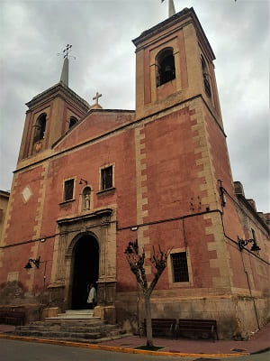
 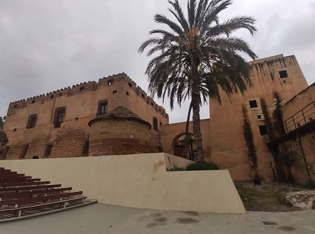
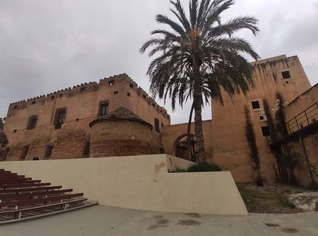
On the outskirts of the town are the Calguerín caves that I saw from afar. There is a town of Senegalese that has settled in the area. There is a lot of rubble there and even the small boats with which they arrived. They don't seem like conflicting people but the place is better not to visit.
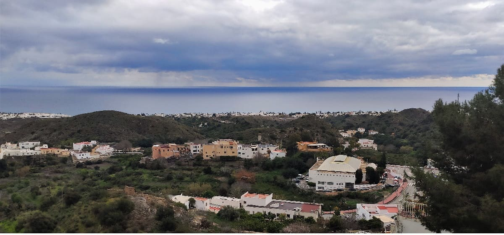
Going down the road you would reach the next town of interest, Mojácar. This town is famous for its beaches that are 3 kilometers from it. It is built on a mountain and is full of slopes where the predominant color is white. They are little houses with balconies and with decorations on the windows in some of them. It has a fairly common church in the center of the town but it certainly likes it because of the theme of the general architecture of southern Andalusia, the white villages and for being nestled in the mountains. From above you can see all the beaches. Near the beach there are a multitude of resorts and hotels and the Parador Nacional de Mojácar.
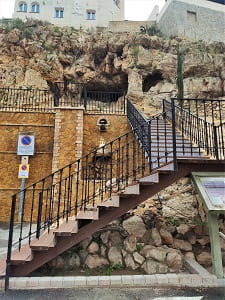
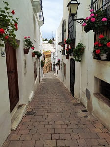
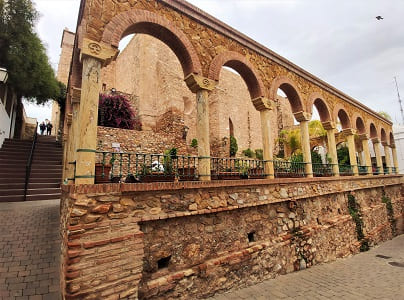
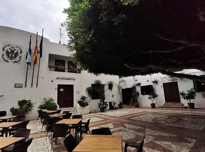

Then I would go south towards Níjar. This town has a more peculiar historic center in which its houses are white. Below we can see the main square of the town where the church is located. The church is old made of stone and with a Mudejar wooden roof. The tower would be ordered to be built for defensive purposes, in the times of Carlos V, for which reason his shield shines, just like in the church of Vera that he would see the next day.
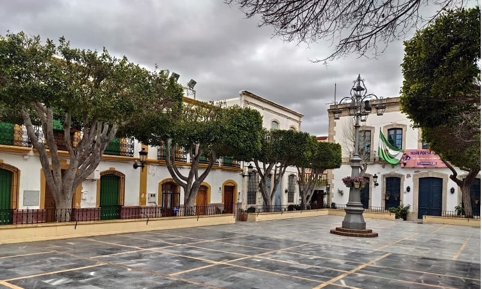
There is a tower at the top of the town where you can see the whole of it, and that is where I would set my destination. The town is part of the beautiful towns of Spain but I, like Mojácar, did not see anything special to deserve that position apart from the geographical situation where they are located. Apart from the attractiveness of its streets with the contrast of the exterior desert, the town has some unique buildings such as the Water Museum and the aforementioned tower. Níjar is surrounded by a desert area. Lastly, he would visit the capital, Almería in the afternoon.
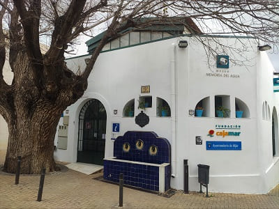
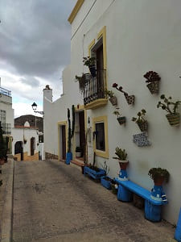
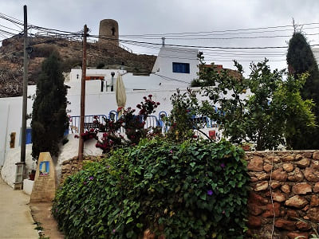
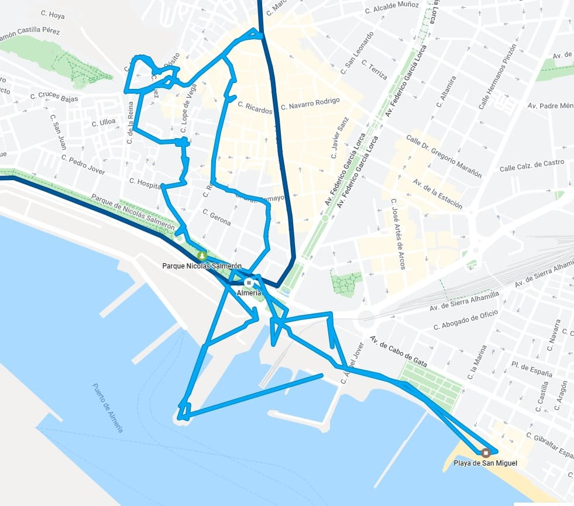
Almería is one of the Andalusian province capitals with the least attractiveness in Andalusia, only headed by Huelva. Although right now it has little to offer, the truth is that it has a lot of potential to be able to offer visitors more. It could be almost at the level of Malaga since its cathedral is older and from the outside it reminds more of a fortress than a cathedral.
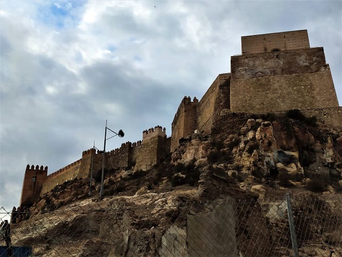
The enclosure of the Arab citadel is enormous and in fact it is being restored and reformed to put it in value. The Alcazaba a solid and extensive fortress with walls more than three meters wide and five meters high, forming a closed enclosure on itself, but connected to the walls of the Wall that configure and give meaning to its own development, within a more complex unit, such as the fortification of the city, in which the La Hoya ravine and the San Cristóbal hill maintain a direct connection with the Alcazaba, both physically and visually, creating a set of extraordinary magnitude.
It is believed that before the existence of what we know today as the Alcazaba, on the same hill there was a rabida whose construction was dated to the middle of the 9th century, with the intention of defending the suburbs from the Normans between the years 840 and 861. It was designed as a defense building located within the city of Almería, exactly in the north of the Historic District. A citadel is a citadel built on several levels that usually occupies an entire elevation of land. It has walls with defense towers, streets, houses and a mosque.
It is divided into three stages, the third being the core of it, the castle. The second compound would be where the rulers and their subjects lived and the first compound was the largest where the troops and the population took refuge in case of siege, with numerous stalls to store food and cisterns for water.
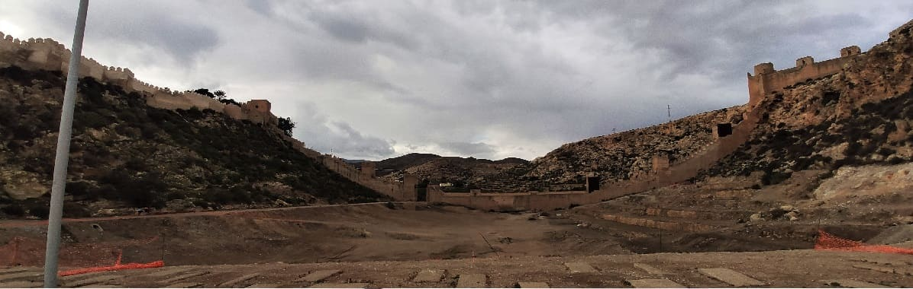
The old town is separated from the new Almería by the Paseo de Almería with the Plaza de San Sebastian and the Puerta de Purchena. This area is full of modern buildings.
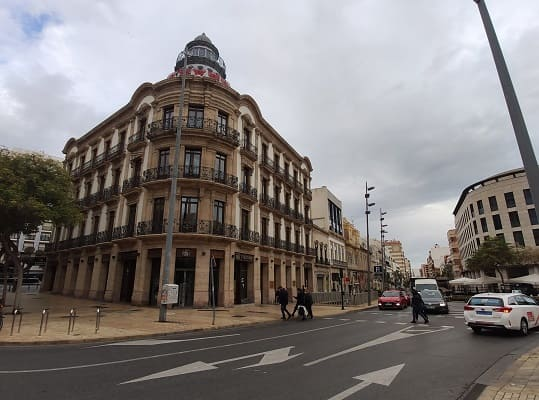
One of the most important squares apart from these in modern Almería is the Plaza de la Constitución from the late 19th century where the Town Hall is located. Nearby is the old Refuge from the Spanish Civil War, now converted into a Civil War interpretation center.
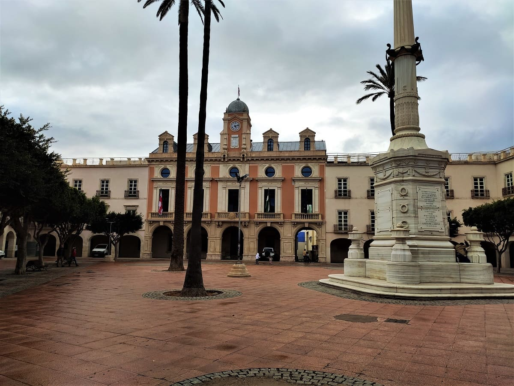
It has several old stone churches that could date back to the 15th century, shortly after the capture of the city by the Christians.
The last day I would visit Vera, a town very close to the Almería beach, which in fact the town that has the beaches is called Vera Playa. The town has a fairly old church, the church of Nuestra Señora la Encarnación, which had noble shields and that of the Catholic kings that have been removed from the façade and another one that is very poorly preserved. They have made a concrete replica in a building attached to the church. In the main square, in addition to the church, is the town hall.
Other notable buildings is the bullring which has a bullfighting museum with bullfighters' costumes, photographs or different old documents related to bullfighting in that town.
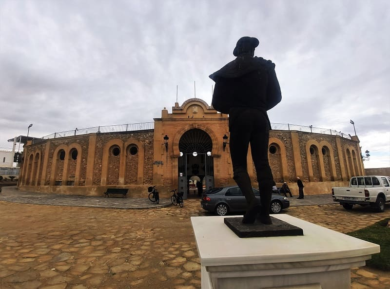
The beaches of Vera are some of the best in Spain, with a large area from the sea to the first line of the beach. In addition, a part is located next to a pine forest, which means that it retains that natural and virgin air.
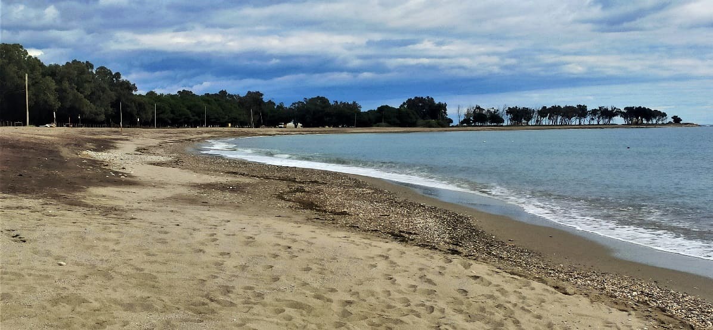
© 2016 - All Rights Reserved - Designed by Sergio López Martínez
El sitio se mantiene gracias a la publicidad, por favor Desactiva Adblock para seguir navegando
He desactivado Adblock![[Valid RSS]](https://www.onepointsync.com/wp-content/uploads/2016/08/valid-rss-rogers.png "Validate my RSS feed")